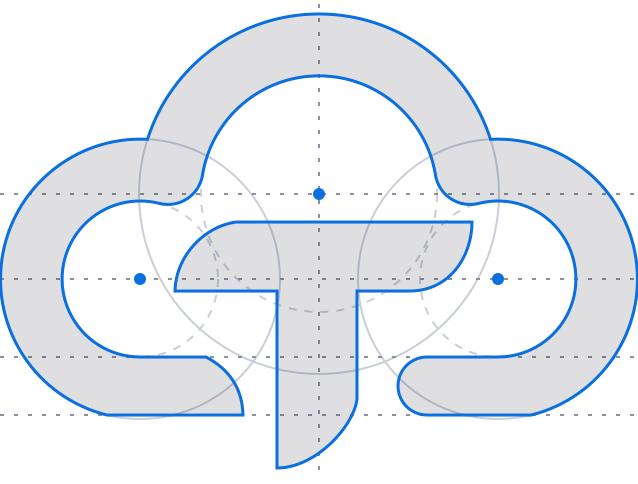

Brand Guidelines
The logo, its variants, and the colour and type system that sit around it. Written for the people building on Tandiko and the people presenting it.
Version 1.0
September 2026
Internal & partner use
01
The mark
Tandiko is a platform for building cloud applications. Every app is a shell with modules embedded in it; Tandiko supplies the shell's barebones, the SDK the modules talk through, and the authentication, RBAC, user and group management, notifications and tasks underneath.
The mark says that in one figure: a cloud that holds a T. The cloud is the platform, drawn as an open outline rather than a solid — it contains, it does not fill. The T is folded from a single ribbon, one surface turning through itself, and it breaks the cloud's edge at the bottom because what you build on Tandiko is yours and leaves the platform.

GEOMETRY
Five circles on one vertical axis: a 180r crown, two 140r shoulders, and their inner pair.
RING WEIGHT
Constant, 62 units on the master grid. It never varies, and it is the unit for clear space.
TERMINALS
The cloud opens at the bottom — round cap to the right of the stem, angled cut to the left.
THE FOLD
One curve from the crossbar's right edge to the stem's left. It carries the darker face.
tandiko — Brand Guidelines v1.0
02
02
Lockups
Four lockups, each with a job. Use the supplied files — never rebuild one by placing the mark next to typed text.
tandiko — Brand Guidelines v1.0
03
03
Clear space & minimum size
The measure is X, the weight of the cloud's ring. It scales with the logo, so the rule holds at every size.
2X
2X
2X
2X
X = cloud ring weight
Nothing — no type, rule, image edge or page trim — enters the shaded band.
Primary lockup
260 px · 70 mm
Below this the tagline drops under 5pt. Use the compact lockup instead.
Compact lockup
120 px · 32 mm
The working minimum for headers, footers and sign-in screens.
Mark alone
24 px · 8 mm
At 16 px and below, use the mono mark — the gradient and the fold stop reading.
tandiko — Brand Guidelines v1.0
04
04
Misuse
Each of these has been seen in the wild. None of them are acceptable.
✕Stretch or condense
✕Rotate or tilt
✕Recolour the gradient
✕Add shadow or glow
✕Low-contrast ground
✕Re-typeset the name
✕Box, badge or outline it
✕Fade or screen back
Two more, less obvious
Never use the cloud without the T, or the T without the cloud — neither half is a Tandiko mark on its own. And never set the wordmark yourself, even in Poppins SemiBold: the supplied files carry −1.2 tracking and a fixed relationship to the mark that typing will not reproduce.
tandiko — Brand Guidelines v1.0
05
05
Colour
Blue carries the brand; the neutrals carry the work. Anything that is not the logo should be mostly neutral with blue used deliberately.
CORE BLUES
Deep
#0031AC
Gradient start. Headlines on light, dark UI fills.
Action
#0A6FE0
The interface blue: links, primary buttons, focus. 4.8:1 on white.
Azure
#1A9DF7
Gradient mid. Fills and charts only — never text on white.
Sky
#44EBFE
Gradient end. Accents on dark, highlights. Decorative.
NEUTRALS
Ink
#141A2C
Graphite
#2A3145
Slate
#545B69
Steel
#8A90A0
Line
#C9CED8
Mist
#E3E6EB
Fog
#F4F5F7
GRADIENTS — LOGO ONLY
cloud · #0031AC → #1A9DF7 65% → #44EBFE · −10°
T · #0052D9 → #28BCFF · −15°
RULES
The two gradients belong to the mark. Do not use them as page or panel backgrounds — a Tandiko surface is neutral, with flat blue where blue is needed.
Body text is Ink on Fog or white; secondary text is Slate. Steel is for labels 16px and above only.
Every module in an app inherits this palette. Modules do not introduce brand colours of their own.
tandiko — Brand Guidelines v1.0
06
06
Typography
Two families. Poppins is the brand voice and stops at headlines; IBM Plex runs everything you actually read.
Poppins
Regular · Medium · SemiBold
The logo is drawn from it. Use it for headlines, decks, campaign pages and nothing below 20px. Geometric and even — it is a display face here, not a reading one.
IBM Plex
Sans 400/500/600 · Mono 400/500
Product UI, documentation, long copy, tables and forms. Mono for code, endpoints, module and permission identifiers. Both are open source and ship with the SDK docs.
SCALE
The name is always lowercase — tandiko — in the logo and in running text. Never Tandiko in a logo position, never TANDIKO anywhere.
tandiko — Brand Guidelines v1.0
07
07
The files
Every file is vector, built from the same coordinate space, so the mark sits identically across all of them.
assets/src/*.svg
The editable originals. Wordmark and tagline are live text in Poppins, so the tagline can be changed, retracked or removed and the outlined set rebuilt with yarn workspace @tandiko/brand build. Open it in a browser or a design tool — the font loads from Google Fonts, so it is not safe as an <img> source.
assets/dist/*.svg — everything below
Type converted to outlines. No font dependency, identical rendering in every browser, print RIP and slide tool. These are what ship — in the product, on the web, in decks and in print.
Need a raster? Render one from assets/dist with tandiko-brand-png at the size you need. Any other format — EPS, PDF, a favicon bundle — goes back to the source files rather than to a conversion of a conversion. Anything traced, screenshotted or re-drawn from a slide is not the logo.
tandiko — Brand Guidelines v1.0
08